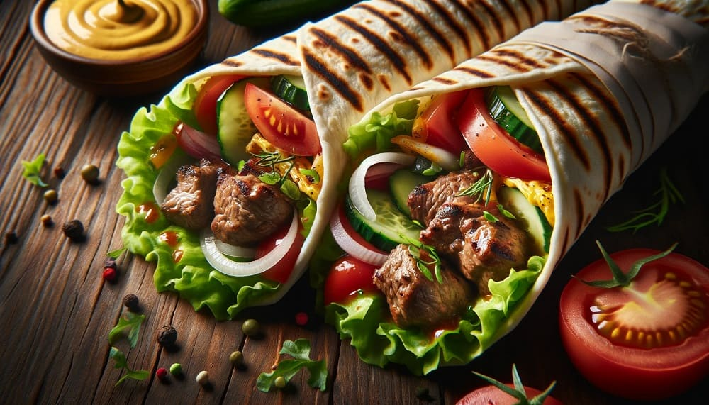

Menu
Kebab
Wybierz mądrze szefie!
Mikrus (Mały): 20 cm
Kompakt (Średni): 30 cm
Moloch (Duży): 40 cm
Tytan (XXL): 60 cm
Ceny pod każdą pozycją podane od najmniejszej do największej
-
🥙 Piękna klasyka
Mięsko: drobiowe, wołowe, baranie lub mieszane
Chlebek: pita, tortilla lub buła
Autorska kompozyjca warzyw
Sosiowo do wyboru do koloru bracie
18 | 21 | 28 | 38
🥙 Serowy potwór
Mięsko: drobiowe, wołowe, baranie lub mieszane
Chlebek: pita, tortilla lub buła
Autorska kompozyjca warzyw
Sosiowo do wyboru do koloru bracie
Serek: mozarella, chedar lub halloumi
20 | 23 | 30 | 40
🥙 Jankes
Mięsko: drobiowe, wołowe, baranie lub mieszane
Chlebek: pita, tortilla lub buła
Autorska kompozyjca warzyw
Sosiowo do wyboru do koloru bracie
Fryty: belgijskie lub z batatów
20 | 23 | 30 | 40
🥙 Prawdziwy chłop
Mięsko: drobiowe, wołowe, baranie lub mieszane
Chlebek: pita, tortilla lub buła
Sosiowo do wyboru do koloru bracie
Podwójne mięsko
23 | 26 | 33 | 43
🥙 🌶 Świat w ogniu
Mięsko: drobiowe, wołowe, baranie lub mieszane
Chlebek: pita, tortilla lub buła
Sosiowo: tabasco lub chilli
Papryka: jalapeno, habanero lub chilli
21 | 24 | 31 | 41
🌱 Vege
Mięsko: seitan, sotlety sojowe, falafel lub tofu
Chlebek: pita, tortilla lub buła
Autorska kompozyjca warzyw
Sosiowo do wyboru do koloru bracie
16 | 19 | 26 | 36
Talerz
Wybierz mądrze szefie!
Talerzyk Mały
Talerzyk Duży
Ceny pod każdą pozycją podane od najmniejszej do największej
-
🥙 Box
Mięsko: drobiowe, wołowe, baranie lub mieszane
Autorska kompozyjca warzyw
Sosiowo do wyboru do koloru bracie
18 | 22
-
🥙 Piękna klasyka
Mięsko: drobiowe, wołowe, baranie lub mieszane
Autorska kompozyjca warzyw
Sosiowo do wyboru do koloru bracie
21 | 25
🥙 Serowy potwór
Mięsko: drobiowe, wołowe, baranie lub mieszane
Autorska kompozyjca warzyw
Sosiowo do wyboru do koloru bracie
Serek: mozarella, chedar lub halloumi
23 | 27
🥙 Jankes
Mięsko: drobiowe, wołowe, baranie lub mieszane
Autorska kompozyjca warzyw
Sosiowo do wyboru do koloru bracie
Fryty: belgijskie lub z batatów
23 | 27
🥙 Prawdziwy chłop
Mięsko: drobiowe, wołowe, baranie lub mieszane
Sosiowo do wyboru do koloru bracie
Podwójne mięsko
26 | 30
🥙 🌶 Świat w ogniu
Mięsko: drobiowe, wołowe, baranie lub mieszane
Sosiowo: tabasco lub chilli
Papryka: jalapeno, habanero lub chilli
24 | 28
🥙 Dla dzieci
Stripsy: 4 szt. | 6 szt.
Fryty: belgijskie lub z batatów
Sosiwo: ketchup, czosnkowy lub jogurtowy
20 | 25
🌱 Vege
Mięsko: seitan, sotlety sojowe, falafel lub tofu
Autorska kompozyjca warzyw
Sosiowo do wyboru do koloru bracie
19 | 23
Sałatki
Jeden rozmiar!
-
🌱 Sałatka grecka
Składniki: kawałki ogórka, pomidora, czerwonej cebuli, oliwek, sera feta
Dressing: oliwa z oliwek, cytryna, bazylia i oregano
18
-
🌱 Sałatka z kuskusem
Składniki: kuskus, grillowane warzywa: cukinia, papryka, bakłażan, świeże zioła, orzechy: pistacje, migdały
Dressing: sok z cytryny, oliwa z oliwek
19
-
🌱 Sałatka z falafelem
Składniki: liście sałaty, pomidor, czerwona cebula, kawałki ogórka, kuleczki falafela, hummus, oliwki
Dressing: tahini
20
-
🌱 Sałatka colesław
Składniki: biała kapusta, marchewka, majonez, kwaśna śmietana lub jogurt, ocet jabłkowy, przyprawy
17
-
🌱 Sałatka caprese
Składniki: plasterki pomidora, plastry mozzarelli, świeże liście bazylii, oliwki
Dressing: oliwa z oliwek i ocet balsamiczny
21
-
🌱 Sałatka z awokado i mango
Składniki: plasterki awokado, pokrojone mango, mieszanki sałat, czerwonej cebuli, orzechów
Dressing: sok z limonki, oliwa z oliwek i miód
18
-
🌱 Sałatka z quinoa
Składniki: ugotowana quinoa, mieszanka sałat, pomidory koktajlowe, ogórek, czerwoną cebulę, posiekaną natkę pietruszki
Dressing: sok z cytryny i oliwa z oliwek
22
Desery
Jeden rozmier!
-
Baklawa
Klasyczny bliskowschodni deser składający się z warstw chrupiącego ciasta filo lub yufki, orzechów i syropu
10
-
Halva
Popularny deser bliskowschodni, halva, wykonana z sezamu lub pasty z orzechów, jest słodka i bogata w smaku
11
-
Lokum
Inaczej znane jako turecki rahat lokum, to delikatne, żelowe słodycze o różnych smakach, często posypane cukrem pudrem lub kokosem
12
-
Sernik
Klasyk wśród deserów, sernik może być świetnym wyborem dla kebabowni, szczególnie jeśli oferują różne smaki, takie jak tradycyjny, czekoladowy czy owocowy
9
-
Babeczki
Małe babeczki w różnych smakach: waniliowe, czekoladowe, marchewkowe
3 szt.
13
-
Sorbet
Świeży i orzeźwiający sorbet owocowy: truskawkowy, cytrynowy, malinowy
10
Napoje
Ceny za 500ml
-
Woda Gazowana lub niegazowana
4
-
Coca cola (różne rodzaje)
6
-
Fanta
6
-
Sprite
6
-
Fuze tea (różne rodzaje)
5